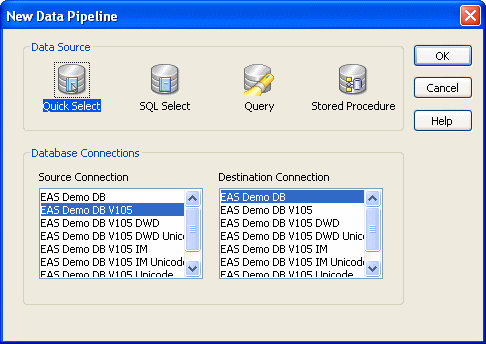
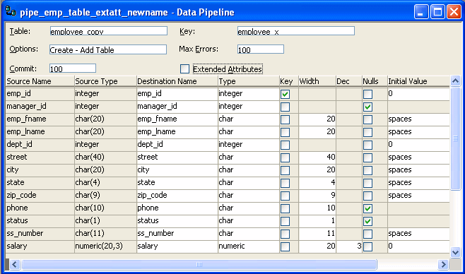

You have a number of choices when creating a data pipeline. This section leads you through them.
 To create a data pipeline:
To create a data pipeline:
Click the New button in the PowerBar and then select the Database tab page.
Select Data Pipeline and click OK.
The New Data Pipeline dialog box displays.

The Source Connection and Destination Connection boxes display database profiles that have been defined. The last database you connected to is selected as the source. The first database on the destination list is selected as the destination.
 If you do not see the connections you need To create a pipeline, the databases you want to use for your
source and destination must each have a database profile defined.
If you do not see profiles for the databases you want to use, select
Cancel in the New Data Pipeline dialog box and then define those
profiles. For information about defining
profiles, see "Changing the destination
and source databases".
If you do not see the connections you need To create a pipeline, the databases you want to use for your
source and destination must each have a database profile defined.
If you do not see profiles for the databases you want to use, select
Cancel in the New Data Pipeline dialog box and then define those
profiles. For information about defining
profiles, see "Changing the destination
and source databases".
Select a data source.
The data source determines how PowerBuilder retrieves data when you execute a pipeline:
Select the source and destination connections and click OK.
Define the data to pipe.
How you do this depends on what data source you chose in step 3, and is similar to the process used to define a data source for a DataWindow object. For complete information about using each data source and defining the data, see Chapter 18, "Defining DataWindow Objects ."
When you finish defining the data to pipe, the Data Pipeline painter workspace displays the pipeline definition, which includes a pipeline operation, a check box for specifying whether to pipe extended attributes, and source and destination items.

The pipeline definition is PowerBuilder's best guess based on the source data you specified.
Modify the pipeline definition as needed.
For information, see "Modifying the data pipeline definition ".
(Optional) Modify the source data as needed. To do so, click the Data button in the PainterBar, or select Design>Edit Data Source from the menu bar.
For information about working in the Select painter, see Chapter 18, "Defining DataWindow Objects ."
When you return to the Data Pipeline painter workspace, PowerBuilder reminds you that the pipeline definition will change. Click OK to accept the definition change.
If you want to try the pipeline now, click the Execute button or select Design>Execute from the menu bar.
PowerBuilder retrieves the source data and executes the pipeline. If you specified retrieval arguments in the Select painter, PowerBuilder first prompts you to supply them.
At runtime, the number of rows read and written, the elapsed execution time, and the number of errors display in MicroHelp. You can stop execution yourself or PowerBuilder might stop execution if errors occur.
For information about execution and how rows are committed to the destination table, see "When execution stops".
Save the pipeline definition if appropriate.
For information, see "Saving a pipeline ".
 Seeing the results of piping data You can see the results of piping data by connecting to the
destination database and opening the destination table.
Seeing the results of piping data You can see the results of piping data by connecting to the
destination database and opening the destination table.